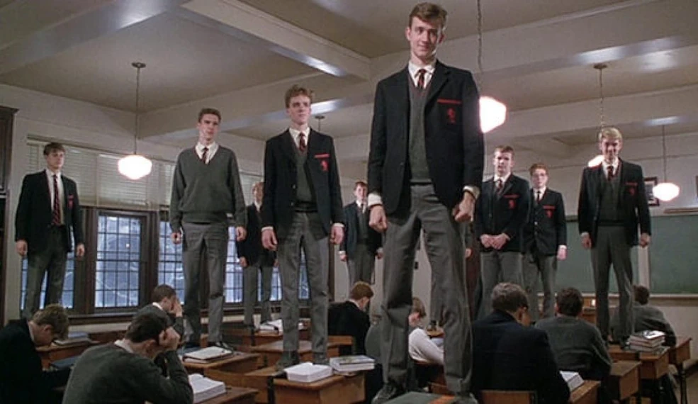

A coming-of-age film that I watched originally to fill my autumnal need but found myself instead thought provoked. I related heavily to it although I didn’t expect to. It’s a movie about young white boys in New England America attending a preparatory school. This is far removed from me as I am a black woman from the United Kingdom, London who is out of school. However, I find myself deeply resonating and connecting to the struggles the boys experienced.

We built this publication on a simple, perhaps old-fashioned belief: that readers are hungrier for depth than the industry assumes. Not because people dislike speed, but because speed has increasingly become the only setting on offer. The op-ed written in an afternoon, the take composed in the time it takes to read the first tweet about the story — these have their place, but they have also crowded out something slower and more valuable.
The work of a free press is not to referee outrage. It is to help people think.
What would it look like to disagree well? Not to disagree less, and certainly not to disagree quietly, but to disagree in a way that assumes the other side might occasionally be right about something, and that certainty is not the same thing as being correct. It would mean citing sources rather than vibes. It would mean sitting with an uncomfortable fact for longer than a single news cycle allows. It would mean, on occasion, changing your mind in public, which remains one of the rarer sights in political writing.
None of this is a call for false balance, or for treating every claim as equally weighted regardless of evidence. Some arguments are simply better supported than others, and a publication that pretends otherwise for the sake of appearing neutral has failed its readers in a different way. The goal is not the appearance of fairness. It is the substance of rigour.
We do not expect to solve the discourse. But we can decline to participate in its worst habits — and offer, instead, the kind of writing that assumes its reader is capable of sitting with complexity. That, more than any single position on any single issue, is the editorial line of this publication.